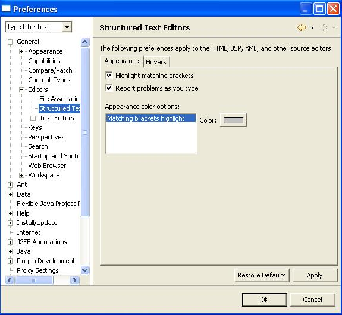
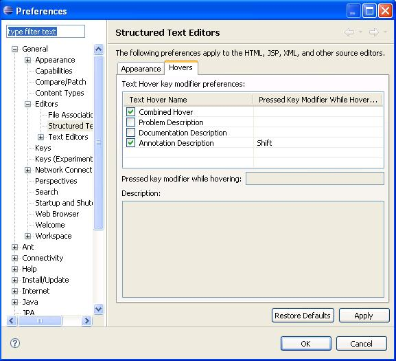
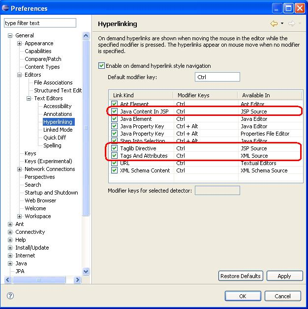
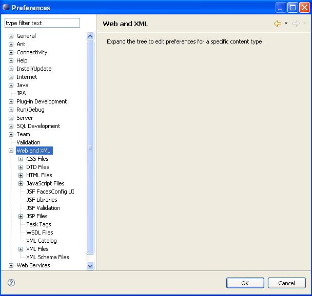
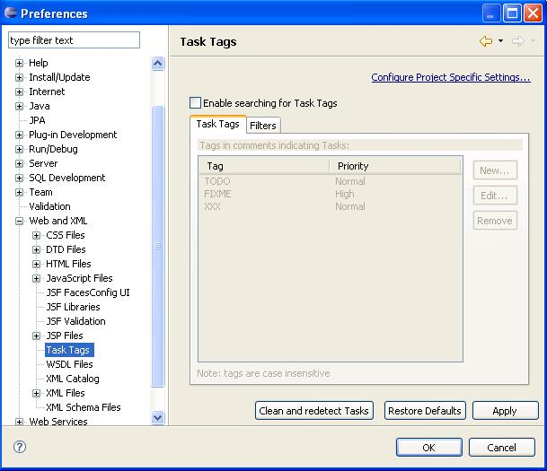

SSE Preference Pages
Steps:
- Select Window->Preferences... from the menu bar.
- Select General->Editors->Structured Text Editor in the
left pane.
- Verify the translations on the Appearance and Hovers pages.


- Select General->Editors->Text Editors->Hyperlinking
in the left pane.
- Only verify the translations of the circled items.

- Select General->Web and XML in the left pane.
- Verify the translations for this page.

- Select General->Web and XML->Task Tags in the left pane.
- Verify the translations for this page.

- Press the Cancel button from the Preferences dialog. Discard
any changes.